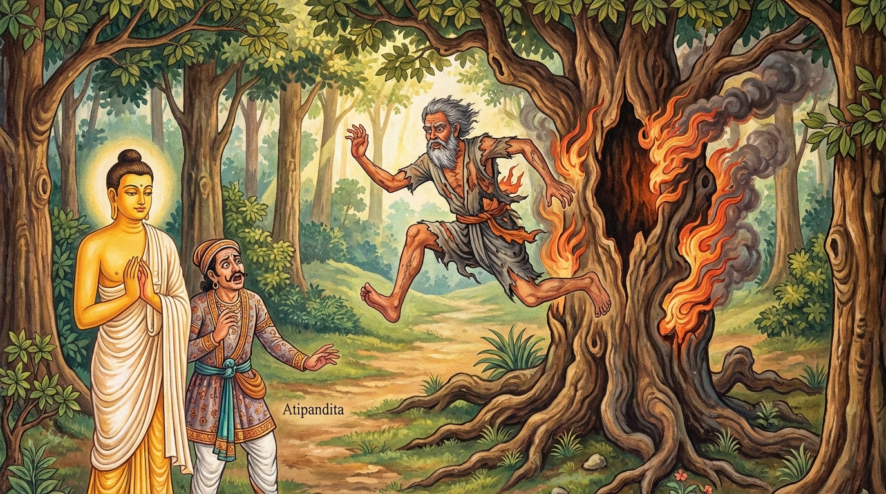

8. කූටවාණිජ ජාතකය (98)
“සාධු ඛො පණ්ඩිතො නාම” (නුවණැත්තා නම් යහපත්ම ය) යන මේ දේශනාව බුදුරජාණන් වහන්සේ ජේතවනාරාමයෙහි වැඩ වාසය කරන සමයෙහි, එක් කපටි වෙළෙන්දෙකු අරබයා වදාළ සේක. සැවැත් නුවර වැසි වෙළෙන්දන් දෙදෙනෙක් එකට එක්ව හවුලේ වෙළඳාම් කරමින්, ගැල්වලින් බඩු ගෙන ජනපදයට ගොස්, ඒවා අලෙවි කොට ලාභ ලබා ආපසු පැමිණියහ. ඔවුන් දෙදෙනාගෙන් කපටි වෙළෙන්දා මෙසේ සිතුවේය: “මොහු බොහෝ දිනක් නිසි ආහාරයක් හෝ සුවපහසු නින්දක් නොමැතිකමින් ක්ලාන්ත වී සිටියි. දැන් තමාගේ නිවසට ගොස් නොයෙක් රසයෙන් යුතු ආහාර ඇති තරම් අනුභව කොට, එය නොදිරවීමෙන් මිය යනු ඇත. එබැවින් මම මේ සියලු බඩු කොටස් තුනකට බෙදා, එක් කොටසක් ඔහුගේ දරුවන්ට දෙන්නෙමි. කොටස් දෙකක් මම ගන්නෙමි.” මෙසේ සිතා ඔහු “අද බෙදමු, හෙට බෙදමු” යැයි කියමින් බඩු බෙදීම කල් දැමුවේය. පසුව නුවණැති වෙළෙන්දා, ඔහුගේ අකමැත්ත මැදම ඔහුට බල කොට බඩු බෙදවා, විහාරයට ගොස් බුදුරජාණන් වහන්සේ වැඳ පුදා පිළිසඳර කතා කළේය. එවිට බුදුරජාණන් වහන්සේ “උපාසකය, ඔබ බොහෝ ප්රමාද වී පැමිණියේය. කොහි සිට මෙහි පැමිණ කලකින් බුද්ධෝපස්ථානයට ආවාදැයි” විමසූ කල්හි, ඔහු ඒ පුවත බුදුරජාණන් වහන්සේට සැල කළේය. එවිට ශාස්තෘන් වහන්සේ, “උපාසකය, ඔහු කපටි වෙළෙන්දෙකු වූයේ දැන් පමණක් නොවේ, පෙරත් කපටි වෙළෙන්දෙකි. දැන් ඔබව රවටන්නට සිතුවාක් මෙන්, පෙරත් පණ්ඩිතයන්ව වංචා කිරීමට උත්සාහ කළේය” යැයි වදාරා, ඔහු විසින් ආරාධනා කරන ලදුව අතීත කථාව ගෙනහැර දැක්වූ සේක.
අතීතයේ බරණැස් නුවර බ්රහ්මදත්ත රජු රාජ්යය කරන සමයෙහි, බෝධිසත්ත්වයෝ බරණැස් නුවර වෙළඳ කුලයක උපන්හ. නම් තබන දිනයෙහි ඔහුට ‘පණ්ඩිත’ යැයි නම් තැබූහ. ඔහු වැඩිවියට පත් වූ පසු වෙනත් වෙළෙන්දෙකු හා එක්ව හවුලේ වෙළඳාම් කළේය. ඒ අනෙක් වෙළෙන්දාගේ නම ‘අතිපණ්ඩිත’ විය. ඒ දෙදෙනා බරණැස් නුවරින් ගැල් පන්සියයක බඩු පටවාගෙන දනව්වලට ගොස් වෙළඳාම් කොට ලාභ උපයාගෙන නැවත බරණැසට පැමිණියහ. ඉක්බිති ඔවුන් බඩු සහ ලාභය බෙදා ගන්නා අවස්ථාවේදී අතිපණ්ඩිත මෙසේ කීවේය: “මා විසින් කොටස් දෙකක් ලැබිය යුතුය.” “ඒ කුමන හේතුවක් නිසාද?” යි පණ්ඩිත වෙළෙන්දා ඇසීය. “ඔබ පණ්ඩිත ය. මම අතිපණ්ඩිත වෙමි. පණ්ඩිතයා එක් කොටසක් ලැබීමටත්, අතිපණ්ඩිතයා කොටස් දෙකක් ලැබීමටත් සුදුසුය.” එවිට පණ්ඩිතයා, “යහළුව, අප දෙදෙනාගේ බඩු සඳහා යෙදූ මුදලත් සමානය. එසේම ගොනුන් හා ගැල් ආදියත් සම සමව යෙදෙව්වෙමු. එසේ තිබියදී ඔබ කොටස් දෙකක් ලැබීමට සුදුසු වන්නේ කෙසේද?” යි විමසීය. “මම අතිපණ්ඩිත බැවිනි” යි ඔහු පිළිතුරු දුන්නේය. මෙසේ ඔවුන් කතා බහ දුරදිග ගොස් වාද කළහ.
එවිට අතිපණ්ඩිත “එක්තරා උපායක් ඇතැයි” සිතා, තමාගේ පියා එක් ගස් බෙනයක සඟවා මෙසේ උපදෙස් දුන්නේය: “අප පැමිණ විමසූ කල්හි ‘අතිපණ්ඩිතට කොටස් දෙකක් ද, පණ්ඩිතට එක් කොටසක් ද ලැබීම සුදුසුය’ යැයි කියන්න.” පසුව ඔහු බෝධිසත්ත්වයන් වෙත ගොස්, “යහළුව, අප දෙදෙනාගේ කොටස් ලැබීමේ යුක්ති යුක්ත බව හෝ අයුක්ති සහගත බව මේ වෘක්ෂ දේවතාවා දනී. එන්න, අපි ඔහුගෙන් අසමු” යැයි කියා, ඔහු එහි කැඳවාගෙන ගොස් “ආර්ය වෘක්ෂ දේවතාවෙනි, අපගේ නඩුව විසඳනු මැනව” යි කීවේය. එවිට ඔහුගේ පියා ස්වරය වෙනස් කොට “එසේ නම් කරුණු කියව” යි කීවේය. “ආර්යයෙනි, මොහු පණ්ඩිත ය. මම අතිපණ්ඩිත ය. අප විසින් එකට එක්ව වෙළඳාම් කරන ලදී. එහිදී කවුරුන් කුමක් ලැබිය යුතුද?” යි ඇසීය. “පණ්ඩිතයා එක් කොටසක් ද, අතිපණ්ඩිතයා කොටස් දෙකක් ද ලැබිය යුතුය” යි පිළිතුරු ලැබිණි. බෝධිසත්ත්වයෝ මෙසේ විනිශ්චය කළ නඩුව අසා, “දැන් මොහු දෙවියෙක් ද නැතිනම් දෙවියෙක් නොවේදැයි දැනගන්නෙමි” යි සිතා, පිදුරු ගෙනැවිත් ගස් බෙනය පුරවා ගිනි දැල්වූහ. අතිපණ්ඩිතගේ පියා ගිනි දැල් වැදුණු කල්හි, අඩක් දැවුණු ශරීරයෙන් යුතුව ගසින් උඩට නැග අත්තක එල්ලී බිමට පැන, මෙම ගාථාව පැවසීය.

“පණ්ඩිතයා නම් යහපති. එහෙත් අතිපණ්ඩිතයා නම් උතුම් නොවේ. අතිපණ්ඩිත පුත්රයා නිසා මම මඳක් දැවුණෙමි.”
එහි “සාධු ඛො පණ්ඩිතො නාම” යනු ලෝකයෙහි නුවණින් යුක්ත වූ, කාරණා කාරණ දන්නා පුද්ගලයා සාධු ය, යහපත් ය, හොබනේ ය. “අතිපණ්ඩිතො” යනු නම නිසා පමණක් ‘අතිපණ්ඩිත’ වූ කපටි පුරුෂයා උතුම් නොවේ ය. “මනම්හි උපකූළිතො” යනු මඳක් දැවුණෙමි, අඩක් දැවී බේරුණෙමි යන අර්ථයි. පසුව ඒ දෙදෙනාම බඩු මැද තබා සම සේ බෙදාගෙන, තමන්ගේ කර්මානුරූපව ගියහ.
බුදුරජාණන් වහන්සේ, “මොහු පෙරත් කපටි වෙළෙන්දාම යැ” යි මෙම අතීත කථාව ගෙනහැර දක්වා ජාතකය සමාප්ත කළ සේක. “එකල කපටි වෙළෙන්දා වූයේ දැන් මේ කපටි වෙළෙන්දාමය. පණ්ඩිත වෙළෙන්දා වූයේ මම ම වෙමි.”
අටවැනි වූ කූටවාණිජ ජාතක වර්ණනාවයි.